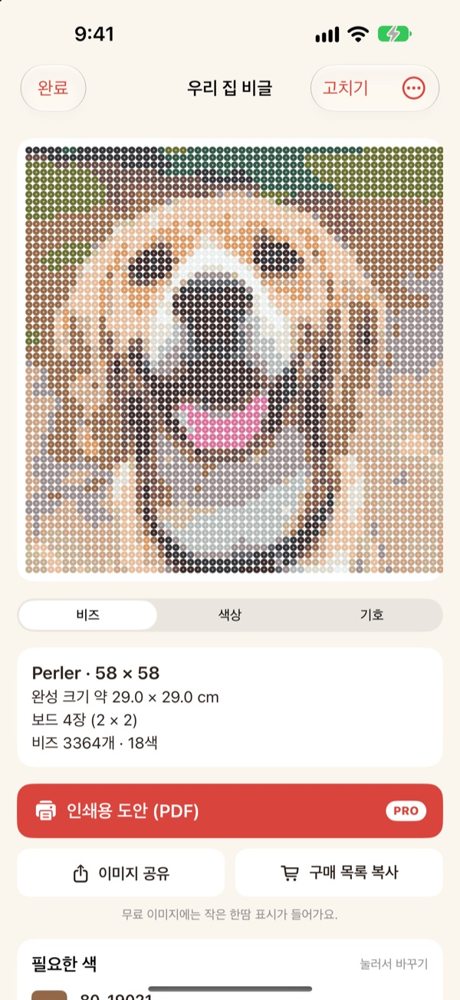
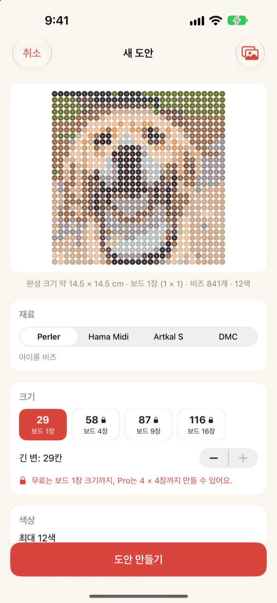
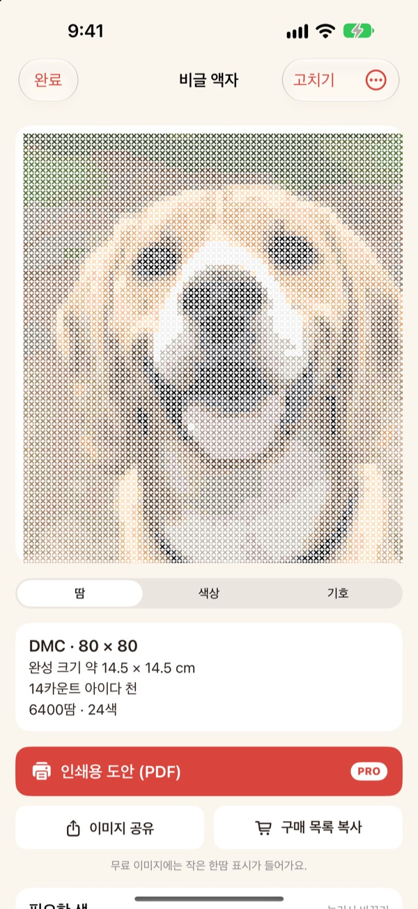
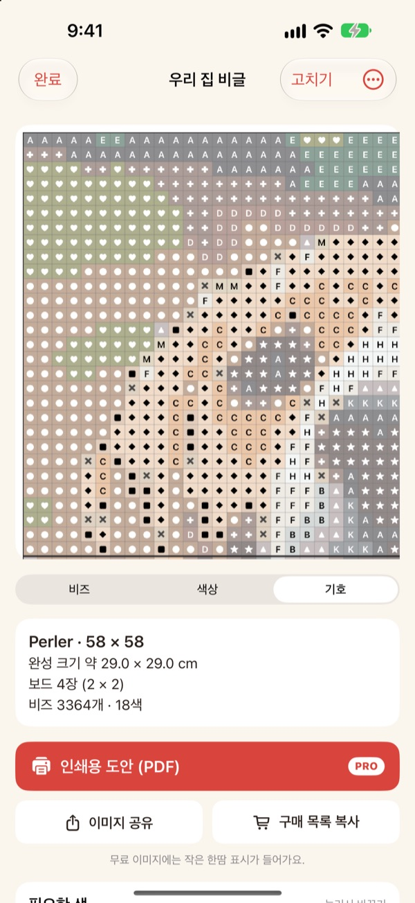
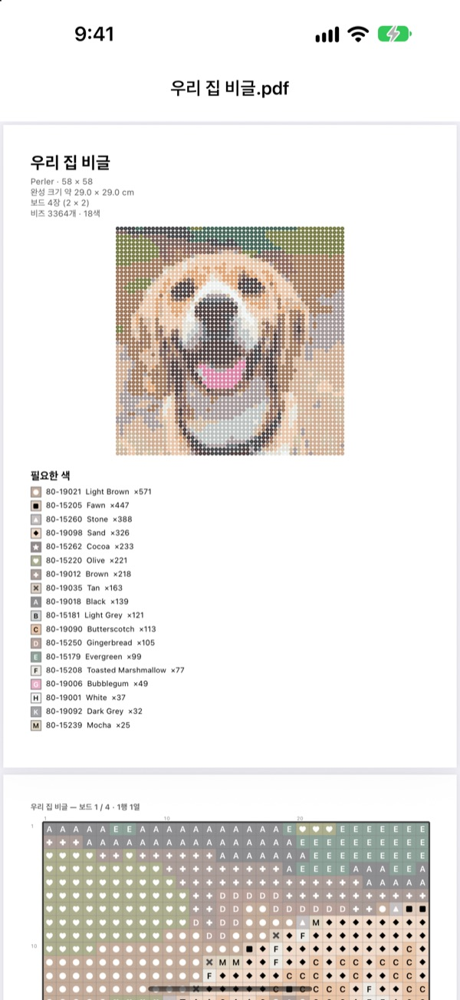

사진 한 장이
도안이 돼요
반려동물, 내 얼굴, 좋아하는 캐릭터 사진을 고르세요. 한땀이 실제로 살 수 있는 색으로 맞춘 아이롱 비즈·십자수 도안을 만들어 드려요.
보드 1장 크기까지는 무료예요. 사진은 iPhone 밖으로 나가지 않아요.

사진으로 직접 해 보세요
앱과 같은 방식으로, 실제 Perler 색표에서 색을 골라요. 크기와 색 수를 바꾸거나 내 사진으로도 해 보세요.
도안은 쉬워도, 실제 비즈 색에 맞추기는 어려워요
아무 편집 앱으로 사진을 픽셀로 만들면 세상에 없는 색이 나와요. 칸마다 어느 통의 비즈인지 짐작하고, 색마다 몇 개를 사야 할지 일일이 세야 하죠. 한땀은 실제로 파는 색 중에서 고르고, 몇 개가 필요한지까지 정확히 알려 줘요.
실제로 파는 색, 실제 색 번호
Perler, Hama Midi, Artkal S 비즈나 DMC 실 중에서 골라요. 칸마다 그 브랜드가 실제로 파는 색으로 맞추고 색 번호를 붙여요.
크기와 쓸 색 수도 정해요. 큰 도안은 29 × 29 페그보드 단위로 나눠요.

십자수 도안도 돼요
DMC 실을 고르면 같은 사진이 십자수 도안이 돼요. 11, 14, 16, 18카운트 아이다 천 중에서 고르면 완성 크기와 색마다 필요한 땀 수를 보여 줘요.

살 것이 한눈에
기호 도안으로 바꿔 칸 하나하나 따라가요. 보드 경계나 10칸마다 굵은 선이 있어요. 색마다 비즈가 몇 개 필요한지 보고 구매 목록 복사로 한 번에 옮겨요.
칸을 눌러 바꾸거나, 한 색을 다른 색으로 한꺼번에 바꿀 수도 있어요.

인쇄해서 바로 시작
Pro에서는 인쇄용 도안 (PDF)을 내보내요. 첫 장에 색 목록, 다음 장부터 보드 한 장씩 나눈 기호 도안이 들어가요.

도안까지 세 단계
- 1
사진을 골라요
반려동물, 얼굴, 로고, 캐릭터 모두 돼요. 주인공이 또렷한 사진이 잘 나와요.
- 2
비즈나 실을 골라요
브랜드와 크기, 쓸 색 수를 정해요.
- 3
만들어요
화면의 도안을 보며 만들거나, Pro로 인쇄해요.
재료와 크기
- Perler · Hama Midi · Artkal S
- 아이롱 비즈, 29 × 29 페그보드, 한 알 약 5mm
- DMC
- 십자수 실, 11·14·16·18카운트 아이다 천
- 무료
- 비즈 보드 1장(29칸), 실은 긴 변 40칸까지
- Pro
- 비즈 보드 4 × 4장(116칸), 실은 200칸까지
- 색 수
- 도안 하나에 2색부터 50색까지
Perler, Hama, Artkal, DMC는 각 회사의 상표이며, 한땀은 이 회사들과 관계가 없어요. 화면 색은 실물과 조금 다를 수 있어요.
무료로 시작하고, 큰 도안과 인쇄는 Pro로
무료
- 보드 1장(십자수 40칸)까지의 도안
- Perler, Hama, Artkal, DMC 모든 브랜드
- 색마다 개수, 구매 목록, 색 바꾸기
- 도안 3개까지 보관
- 작은 한땀 표시가 든 이미지 공유
한땀 Pro
- 인쇄용 PDF 도안
- 보드 4 × 4장(십자수 200칸)까지
- 도안 무제한 보관
- 표시 없는 이미지
- 모든 픽셀 아트 도구
월간·연간 구독, 또는 한 번 결제하는 평생 이용권
앱에서 친구에게 Pro를 선물할 수도 있어요.
자주 묻는 질문
사진이 어디로 올라가나요?
아니요. 사진과 도안은 내 iPhone 안에서만 처리하고 저장해요.
화면 색이 실제 비즈와 조금 달라요.
화면은 플라스틱이나 실과 색이 다르게 보여요. 색 목록에서 색을 누르면 같은 브랜드의 더 가까운 색으로 바꿀 수 있어요.
도안은 얼마나 크게 만들 수 있나요?
무료는 29 × 29 보드 1장, 십자수는 긴 변 40칸까지예요. Pro는 보드 4 × 4장(116칸), 십자수 200칸까지 만들 수 있어요.
어떤 사진이 잘 나오나요?
주인공이 하나이고 배경이 단순한 사진이에요. 색 수가 적을수록 도안이 깔끔해지니, 결과가 지저분하면 색 수를 줄여 보세요.
픽셀 아트도 계속 만들 수 있나요?
네. 사진 픽셀화, 110가지 예시 따라 그리기, 프레임 애니메이션까지 그대로 있어요. 픽셀 아트 도구는 모두 Pro에 들어 있어요.
구입 내역은 어떻게 복원하나요?
앱의 설정에서 구매 내역 복원을 누르세요. Pro를 산 Apple 계정과 같은 계정이어야 해요.
구독은 어떻게 해지하나요?
iPhone 설정 › 내 이름 › 구독에서 한땀을 골라 해지하세요. 평생 이용권은 한 번만 결제하며 갱신되지 않아요.
버그 제보나 기능 제안은 어디로 하나요?
앱 안의 설정 › 의견 보내기가 가장 빨라요. 아래 메일이나 인스타그램 DM(@lee25_ios)으로 보내셔도 돼요.
궁금한 점, 버그 제보, 기능 제안 모두 leeo@kakao.com로 보내 주세요.